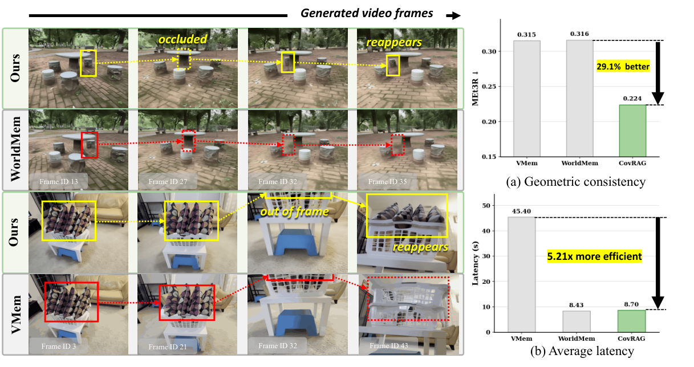
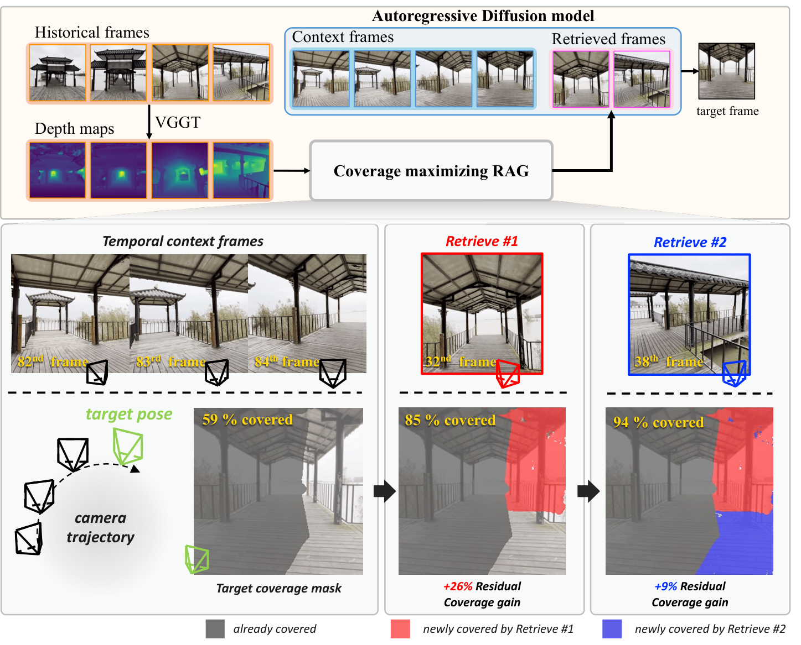
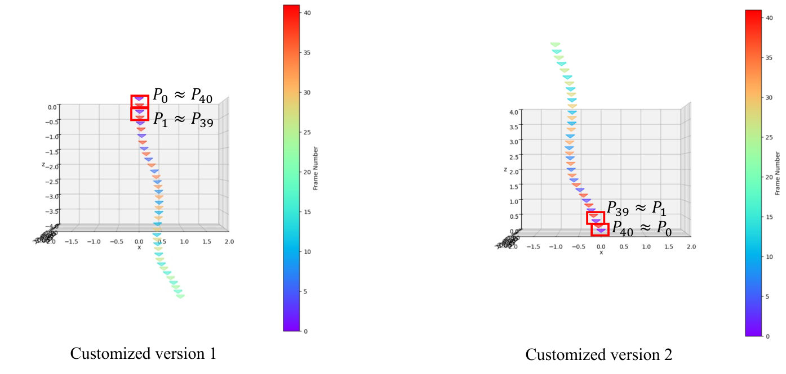
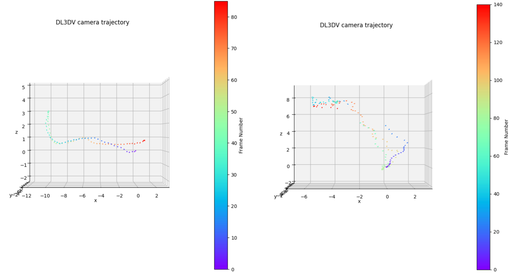
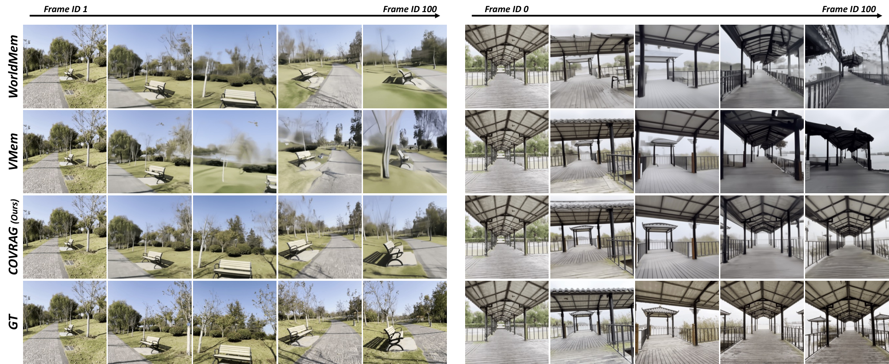
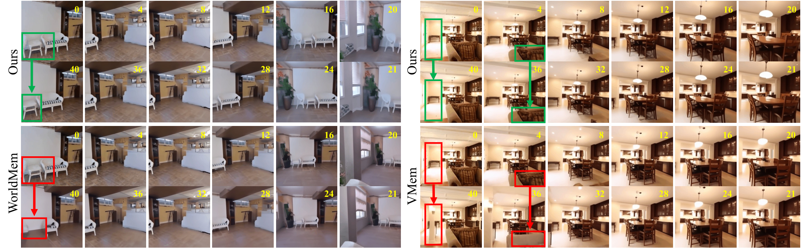
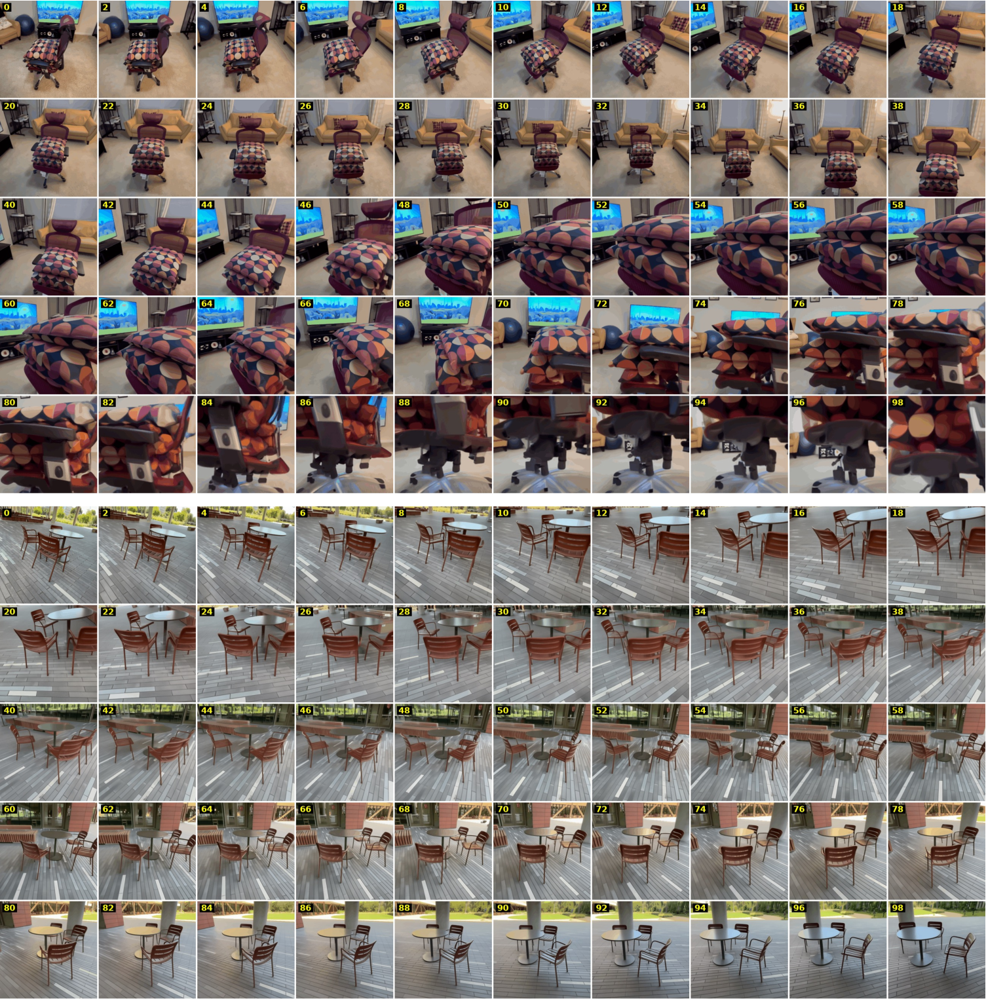
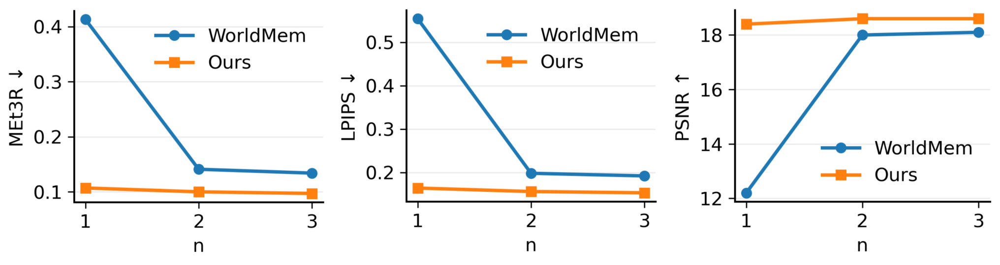
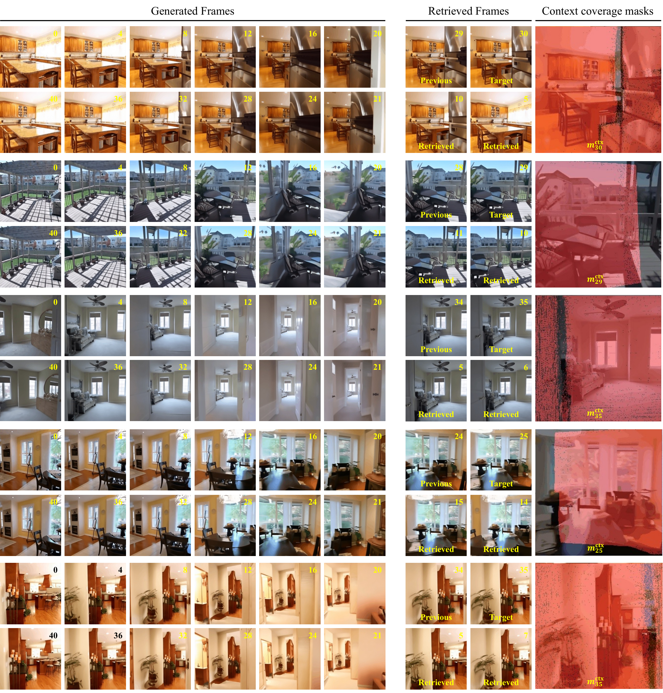

论文要解决的问题是:自回归视频扩散模型的长时程几何一致性。模型在有限时间上下文窗口内生成,一旦相机走出窗口再折返(revisit),先前区域的几何与外观就"忘了" —— 产生空间漂移、闪烁、结构不一致。记忆增强生成(memory-augmented generation)是主流对策:存历史帧,检索一部分作为生成条件。但作者指出其效果完全取决于检索机制,并把它拆成两个正交设计问题:
FoV 重叠(WorldMem):轻量高效,但只到"视角级"粒度 —— 不知道目标视角哪些像素真的可见,不能推理遮挡。
显式 3D 重建(VMem):像素级精细,但维护全局场景表示的成本随 rollout 长度持续增长。
标准做法是独立打分取 top-n:每帧单独算与目标视角的相关性,选前 n 个。但这样选出的帧常常冗余 —— 多帧覆盖同一区域,其他区域仍然无人支撑,在紧预算下直接浪费检索名额。
CovRAG 对两个问题各给一个干净答案:目标视角覆盖图(depth-based pixel-wise visibility,介于 FoV 与重建之间的"实用中间态")作为证据;残差覆盖增益(residual coverage gain,迭代选当前未被覆盖区域的帧)作为选择策略。配合滑动窗口深度缓存把几何估计成本压成常数,实现"像素级可见性推理,但不维护全局场景"。
把"该检索哪些历史帧"从启发式变成受覆盖最大化目标驱动的迭代贪心选择:RealEstate10K 上 MEt3R 几何一致性误差降 29%(0.144→0.102),检索延迟比 VMem 低 5.21×(45.40s→8.70s),且随 rollout 增长近常数 —— 在"证据粒度"与"检索成本"的两难中开辟了中间路线。

延长生成时长有两条路:① 上下文扩展(DFoT、流式机制等)直接拉长注意力窗口。但注意力成本随历史长度快速增长,而且有效窗口仍不足以跨越场景重访 —— 走远再回来时,早期帧早就出了窗口。② 记忆增强:解耦"时间覆盖"与"上下文长度",按需检索过去的帧。作者选择路线②并聚焦检索机制 —— 理由是扩展检索比扩展上下文可行得多,且检索可以不重训生成器就升级。
| 轴 | 既有方案 | 失败模式(论文原文口径) |
|---|---|---|
| 证据轴 | 视角级启发式(时间戳邻近 / FoV 重叠)—— WorldMem、GameFactory 等 | "以整个视角而非像素的粒度推理相关性,无法确定候选记忆帧实际支撑目标视角哪些区域,也无法处理遮挡" |
| 重建式记忆(surfel 索引 / 全局场景模型)—— VMem、ReRender 等 | "需要构建、优化并增量更新持久场景模型,成本随自回归 rollout 复合增长,且重建不完美时引入新失败模式" | |
| 选择轴 | 独立打分取 top-n(几乎所有既有方法) | "逐帧孤立评估相关性,结果集合易冗余;多帧覆盖同一区域而其他区域无人支撑。在上下文限制导致的紧检索预算下,冗余直接减少几何覆盖" |
| 假设 | 论文依据 | 何时会失效 |
|---|---|---|
| VGGT 预测的深度+相对位姿足以支撑覆盖图计算 | §4.3 + 附录 A.4(尺度对齐) | 深度噪声大时覆盖图失真 —— 论文自己做了扰动实验(表5):深度噪声 L2(scale bias 0.10)下 MEt3R 从 0.100 退化到 0.119,仍优于 WorldMem,但强图像退化(L4:blur kernel 31 + 噪声 0.08)下崩到 0.154,低于 WorldMem 的 0.141 |
| 覆盖图作为"检索信号"而非"渲染条件",对中度几何误差鲁棒 | §B.2 鲁棒性分析 | 生成器本身严重漂移时,自生成帧的几何估计跟着坏,检索记忆也不可靠(附录 C 自认) |
| 贪心残差覆盖选择 ≈ 组合覆盖最优 | §4.2 + 消融表2 | 贪心不保证全局最优(集合覆盖是 NP-hard);但消融显示残差策略比独立策略显著好,贪心近似在实践中够用 |
| 检索模块即插即用,不动生成先验 | 附录 D | 若底座模型先验太弱(域外场景),检索再准也救不了 —— 论文未在域外大模型上验证(自称 future work) |
| 符号 | 含义 |
|---|---|
| $\mathbf{x}^0=\{\mathbf{x}^0_f\}_{f=1}^{F}$ | 干净视频,$F$ 帧;上标为扩散噪声级别($k=0$ 干净,$k=1$ 纯噪声) |
| $\mathcal{C}_t=\{t-1,\dots,t-\delta\}$ | 时间上下文窗口索引集(最近 $\delta$ 帧) |
| $\mathcal{M}_t$ / $\mathcal{H}_t$ | 记忆库索引集 / 被检索子集,$\mathbf{x}^0_{\mathcal{H}_t}\subseteq\mathbf{x}^0_{\mathcal{M}_t}$ |
| $\epsilon_\theta(\mathbf{x}^k_t,\mathbf{x}^0_{\mathcal{C}_t},\mathbf{x}^0_{\mathcal{H}_t},k)$ | 记忆增强噪声预测器:条件于上下文 + 检索帧 |
| $\mathbf{m}_{i\to t}\in\{0,1\}^{H\times W}$ | 目标视角覆盖图:源帧 $i$ 支撑目标帧 $t$ 哪些像素 |
| $\mathbf{m}^{\mathrm{ctx}}_t$ | 上下文覆盖图(式3,context 各帧覆盖图的逐像素 OR) |
| $g_j$ | 候选帧 $j$ 的残差覆盖增益(式4) |
| $n$ / $L$ | 检索预算(每步取 $n$ 帧)/ 滑动窗口大小 |
| $\mathbf{d}_i$,$\mathbf{p}_i=[\mathbf{R}_i\mid\mathbf{t}_i]$ | 源帧深度图 / 位姿(旋转+平移) |
连续噪声级别 $k\in[0,1]$,加噪 $\mathbf{x}^{k}=\alpha(k)\mathbf{x}^{0}+\sigma(k)\epsilon$。Diffusion Forcing(DF)的推广在于给每帧独立噪声级别 —— 当前帧去噪的同时,上下文帧可处于任意噪声级别。CovRAG 的记忆条件即挂在 DFoT 骨干上:$\epsilon_\theta(\mathbf{x}^k_t,\mathbf{x}^0_{\mathcal{C}_t},\mathbf{x}^0_{\mathcal{H}_t},k)$ —— 注意 $\mathcal{H}_t$ 与 $\mathcal{C}_t$ 同为条件,这是 WorldMem 式记忆注意模块的标准接法。
对每个源帧 $i$(上下文帧或记忆帧)与目标帧 $t$:取源帧深度图 $\mathbf{d}_i$ 与位姿 $\mathbf{p}_i=[\mathbf{R}_i\mid\mathbf{t}_i]$,对源帧每个像素 $\mathbf{u}$:
多个源像素投到同一目标像素时,只要有一个落地就记覆盖(布尔 OR)。上下文窗口的聚合覆盖图是各帧覆盖图的逐像素逻辑 OR:
$\mathbf{m}^{\mathrm{ctx}}_t$ 中为 0 的像素 = 上下文没撑住的目标区域 —— 正是需要历史记忆补位的区域。
FoV 重叠只知道"两个相机朝向有交集",不知道交集里哪些像素被前景挡住。覆盖图是逐像素几何 warp:被遮挡区域在源帧里根本看不见,反投影后落不进有效目标像素,自然不被标覆盖 —— 遮挡推理是深度 warp 的副产品,不需要额外机制。
VMem 要维护 surfel 场景表示并逐新帧增量更新,查询时渲染目标视角。CovRAG 每个记忆帧的覆盖图只依赖该帧自己的深度+位姿,帧间独立可缓存 —— 没有"全局一致场景模型"这个随时间增长的状态。
对候选记忆帧 $j\in\mathcal{M}_t$:$g_j$ 统计当前上下文没覆盖、而帧 $j$ 能覆盖的目标像素数。已覆盖像素($\mathbf{m}^{\mathrm{ctx}}_t(\mathbf{v})=1$)贡献为零 —— $g_j=0$ 意味着该帧与现有信息完全冗余。
完整流程(Algorithm 1):初始化 $\mathcal{H}_t=\emptyset$,用式3算初始上下文覆盖图;循环 $n$ 次,每次:① 对所有剩余候选算 $g_j$(式4);② 取最大者 $j^\star$ 入检索集(式5);③ 用 $j^\star$ 的覆盖图 OR 更新上下文覆盖图(式6)—— 被选中的帧立刻变成"已覆盖信息"的一部分,后续候选必须在剩余未覆盖区域上竞争。
Algorithm 1 Coverage-Maximizing Retrieval
1: Require: 上下文 x_C, 记忆库 x_M, 目标位姿 p_t, 检索预算 n
2: 用式(3)计算 m_ctx
3: H ← ∅
4: for ℓ = 1 to n do
5: for all j ∈ M \ H do
6: 用式(2)计算 m_{j→t}
7: 用式(4)计算 g_j
8: end for
9: 用式(5)取 j* 入选
10: H ← H ∪ {j*}
11: 用式(6)更新 m_ctx
12: end for
13: return 检索帧 x_H独立打分(WorldMem 式)对每帧算总分(对目标视角的总覆盖),选前 n —— 若两帧视角相近,总分都高、双双入选,但覆盖高度重叠,浪费一个名额。残差打分中,第二帧的得分取决于第一帧选了谁 —— 选择是序贯相关的,天然规避冗余。消融(§12)证实:同样的覆盖图证据,独立选择(0.149 MEt3R)甚至比 FoV+独立(0.141)还差 —— 细粒度证据配粗选择,反而浪费。
覆盖图需要每个记忆帧的深度 $\mathbf{d}_i$。深度来自预训练多视角几何模型 VGGT(预测逐帧深度 + 相对相机运动)。但 VGGT 设计上只处理有限数量的输入视角,而自回归 rollout 的帧数随时间无限增长 —— 全历史跑 VGGT 既不可行也不必要。
生成步 $t$ 只对最近 $L$ 帧 $\mathcal{W}_t=\{x_{t-L+1},\dots,x_t\}$ 跑 VGGT。相邻窗口有重叠帧,提供局部多视角上下文,保证深度估计跨步连贯。
帧 $j$ 进入记忆库 $\mathcal{M}_t$ 时,其深度 $\mathbf{d}_j$ 随 RGB 帧与位姿 $\mathbf{p}_j$ 一起存储。
之后任何时刻计算 $\mathbf{m}_{j\to t}$,直接取缓存的 $\mathbf{d}_j$ warp 到当前目标位姿 —— 深度只算一次,覆盖图随时可算。
一个容易被忽略的细节:VGGT 输出相对尺度的深度与平移,而扩散模型由度量位姿轨迹驱动。直接拿 VGGT 深度配未缩放的度量位姿做反投影,坐标系就错位了。论文在附录 A.4 给出对齐方案:
两条轨迹都归一化到首帧起点后,对窗口内 $N$ 帧逐对算平移距离比,取均值得单一尺度因子 $s$;目标位姿的平移乘 $s$ 后与 VGGT 深度同一坐标系。注意旋转不需要对齐(VGGT 的相对旋转与度量旋转在同一 SO(3) 上,只差尺度的是平移)。

关键闭环:生成的新帧 → 滑窗 VGGT 估深度 → 深度入记忆缓存 → 下一步检索时直接 warp 打分。整个系统的"贵"的部分(生成)成本固定,"随时间增长"的部分(记忆库)只有轻量的布尔覆盖运算 —— 这就是延迟近常数的结构性原因。
自建 loop-closing 评测协议:把 41 帧片段的相机轨迹重排,使相机先离开初始视角、再在长间隔后返回相近位姿($P_0\approx P_{40}$)。主定量在 400 测试片段(分析/消融用 200),$T=40$。直接考验"走远再回来还记得吗"。
用原始轨迹(不人为造回环),100 条视频,$T=100$。场景多样、空间跨度大、视角变化广 —— 上下文常只覆盖目标视角的一部分,天然考验"补位检索"。


| 项 | RealEstate10K | DL3DV10K |
|---|---|---|
| 骨干 | DFoT(Diffusion Forcing Transformer),帧统一 256×256 | |
| 初始化 | RealEstate10K 预训练 DFoT,冻结骨干 | 先在 DL3DV10K 微调 DFoT 80K 步(bs=48),再全量微调记忆增强模型 80K 步(bs=32) |
| 记忆模块训练 | 只训 memory-attention 模块,50K 步,bs=64,8×H100 | 全量微调(只训记忆模块在 DL3DV 上不能可靠学会用检索帧 —— 姿态差距更大) |
| 推理检索 | 每步 $n=2$ 帧记忆;上下文 $\delta=5$ | |
| 上下文(DL3DV) | $\delta=2$,每步生成 4 帧目标(附录 A.1:记忆增强法统一 2 context + 4 target + 2 memory;DFoT 基线单独用 4 context + 3 target 对齐预算) | |
| 训练期记忆采样 | 按 WorldMem 的位姿代理采样 + 时间缓冲,易/难样本混合,逐步扩大采样范围与上下文步长(课程式) | |
四个方法共享同一 DFoT 骨干与权重,唯一变量是检索策略 —— 这是本文实验设计最干净的地方:
指标:一致性用 MEt3R(DUSt3R 对应 + DINO 特征比较,越低越好)、LPIPS、PSNR、SSIM(与同视角 GT 帧比较);质量用 FVD、FID。
| 数据集 | 方法 | MEt3R ↓ | LPIPS ↓ | PSNR ↑ | SSIM ↑ | FVD ↓ | FID ↓ |
|---|---|---|---|---|---|---|---|
| RealEstate10K (T=40, 400 clips) | DFoT(无记忆) | 0.415 | 0.588 | 11.7 | 0.372 | 265.03 | 29.88 |
| +WorldMem | 0.144 | 0.197 | 18.2 | 0.555 | 242.36 | 24.77 | |
| +VMem | 0.120 | 0.174 | 18.6 | 0.568 | 231.77 | 24.05 | |
| +CovRAG | 0.102 | 0.154 | 18.9 | 0.576 | 226.40 | 23.00 | |
| DL3DV10K (T=100, 100 videos) | DFoT(无记忆) | 0.430 | 0.529 | 14.5 | 0.394 | 706.70 | 88.01 |
| +WorldMem | 0.316 | 0.401 | 16.2 | 0.436 | 428.49 | 58.24 | |
| +VMem | 0.315 | 0.380 | 16.3 | 0.447 | 394.79 | 57.61 | |
| +CovRAG | 0.224 | 0.308 | 17.9 | 0.504 | 321.81 | 46.92 |
DFoT→任一记忆方法的跨度远大于记忆方法之间的差距(RealEstate10K MEt3R 0.415→0.14±)。无记忆基线在回环协议下彻底崩(PSNR 11.7),证明固定上下文窗口确实装不下重访 —— 与 R2M-Bench 对"重访记忆"的观测互证。
两数据集上 CovRAG 对 WorldMem 的 MEt3R 降幅都是 29%,但 DL3DV(长程自然轨迹)上对 VMem 也拉开 29%/19%/19%/19% —— 轨迹越长越杂,覆盖式检索的互补性优势越明显。PSNR 差距(DL3DV 上 16.3→17.9,+1.6dB)显著大于 RealEstate10K(+0.3dB)。


| 帧数 | 方法 | PSNR ↑ | MEt3R ↓ | LPIPS ↓ | FVD ↓ |
|---|---|---|---|---|---|
| 60 | WorldMem | 17.24 | 0.162 | 0.233 | 370.29 |
| CovRAG | 18.46 | 0.102 | 0.171 | 352.64 | |
| 80 | WorldMem | 17.60 | 0.186 | 0.249 | 455.27 |
| CovRAG | 19.33 | 0.121 | 0.171 | 444.81 | |
| 100 | WorldMem | 16.57 | 0.216 | 0.288 | 449.64 |
| CovRAG | 19.12 | 0.137 | 0.185 | 424.42 | |
| 120 | WorldMem | 15.72 | 0.240 | 0.353 | 573.92 |
| CovRAG | 18.22 | 0.169 | 0.230 | 494.36 |
60→120 帧:WorldMem 的 FVD 恶化 55.0%,CovRAG 只恶化 40.2% —— 误差累积更慢。且 WorldMem 在 100 帧后 PSNR 反而下降(16.57<17.60),CovRAG 保持缓升后微降,长程下的优势是结构性的(残差选择持续补位)而非一次性的。

CovRAG 的检索步包含 VGGT 前向(滑窗)+ 记忆帧 warp + 残差打分,单步比 FoV 贵;但 VMem 的显式 3D 记忆随 rollout 线性变贵(场景表示更新与查询成本复合增长),而 CovRAG 滑窗+缓存把每步几何开销钉死在 $L$ 帧规模 —— 40→120 帧检索延迟仅 0.98s→1.19s,峰值显存 12.84→12.98 GB(表4)。折算总推理时间,检索开销平均只占总时长的 7.3%,换来 MEt3R −29.2% / LPIPS −21.8%。
变化 $n\in\{1,2,3\}$ 与 WorldMem 对比:CovRAG 在所有预算下一致占优,且 $n=1$ 时就有强表现(覆盖式证据即使在极紧预算下也能找到信息量最大的帧);$n=1\to2$ 两法都有提升,$n=2\to3$ CovRAG 近饱和 —— 残差选择天然抑制冗余,第二个名额之后边际收益迅速归零。实用结论:预算给 2 就够,这比"堆记忆帧数"的直觉路线便宜得多。

本文消融设计极简但切中要害:两个设计轴各取两档,做 2×2 全因子(表2,RealEstate10K):
| 配置 | 证据 | 选择 | MEt3R ↓ | LPIPS ↓ |
|---|---|---|---|---|
| (a) | FoV 重叠 | 独立打分 | 0.141 | 0.198 |
| (b) | FoV 重叠 | 残差增益 | 0.130 | 0.187 |
| (c) | 目标视角覆盖图 | 独立打分 | 0.149 | 0.210 |
| (d) | 目标视角覆盖图 | 残差增益 | 0.100 | 0.156 |
(c) 是最反直觉的一格:细粒度覆盖图配独立选择,比 FoV 配独立选择还差(0.149>0.141)。原因:覆盖图打出的高分帧互相重叠,独立 top-n 选出一堆冗余帧,精细证据被浪费 —— 甚至不如"粗证据+碰运气"。
(a)→(b):FoV 证据下换残差选择,0.141→0.130,小幅改善 —— 冗余消除是策略层红利,与证据粒度正交。但增益有限,因为 FoV 无法定位"哪些像素需要补"。
| 设置 | 等级 | PSNR ↑ | MEt3R ↓ | LPIPS ↓ |
|---|---|---|---|---|
| WorldMem(参照) | — | 18.0 | 0.141 | 0.198 |
| CovRAG(Clean) | — | 18.6 | 0.100 | 0.158 |
| 图像退化(blur kernel / 高斯噪声) | L1(5 / 0.01) | 18.3 | 0.115 | 0.175 |
| L2(11 / 0.03) | 18.2 | 0.119 | 0.163 | |
| L3(21 / 0.05) | 18.2 | 0.122 | 0.180 | |
| L4(31 / 0.08) | 16.7 | 0.154 | 0.251 | |
| 深度噪声(scale bias / 附加噪声) | L1(0.05) | 18.3 | 0.102 | 0.174 |
| L2(0.10) | 18.2 | 0.119 | 0.176 |
核心论点:"几何只当检索信号而非渲染条件,所以对中度误差鲁棒" —— 检索分数取决于整帧的空间支撑量,不依赖逐像素几何精确。实测:深度噪声 L2(尺度偏差 10%)下 MEt3R 仅 0.100→0.119;但图像退化 L4(几何估计器输入被严重破坏)时崩到 0.154,跌破 WorldMem —— 失效边界在"输入退化到几何估计器整体失灵",而非几何误差本身。

把 CovRAG 放进"记忆增强长视频生成"坐标系。对比对象覆盖证据轴两端与选择轴的典型做法,固定维度横向比较:
| 方法 | 证据形式 | 选择策略 | 几何成本随 rollout | 粒度 | 与 CovRAG 的关系 |
|---|---|---|---|---|---|
| WorldMem(2025) | 相机位姿 FoV 重叠 | 独立打分 top-n | 近常数(位姿运算) | 视角级 | 效率标杆、效果下界;CovRAG 证据与选择双升级,延迟仅 +3% |
| VMem(2025) | CUT3R 重建 + surfel 场景 | 渲染目标视角检索 | 线性增长(增量优化+渲染) | 像素级 | 粒度标杆、成本上界;CovRAG 用"免重建的深度 warp"达到相近粒度,延迟 1/5.21 |
| Lyra 2.0(NVIDIA, 2026,库内笔记) | 逐帧 3D cache(深度+点云)+ 几何感知检索 | 可见性评分 + 贪心检索 $N_s$=5 帧 | cache 逐帧累积,检索局部 | 像素级 | 同为"显式几何只做路由"哲学;差异:Lyra2 用 canonical 坐标 warp 注入 q/k,CovRAG 只做检索不改注意力;Lyra2 在 832×480 大模型上,CovRAG 在 256×256 DFoT 上 —— 同一思想在不同规模上的两次验证 |
| DFoT(2025) | 无(纯上下文) | — | — | — | CovRAG 的骨干与"无记忆"下界;证明固定窗口装不下重访 |
| R2M-Bench(2026,库内笔记) | —(评测基准) | — | — | — | 度量端:Lyra-2 在 R2M 榜 0.310 排第 4,佐证"显式几何记忆 ≠ 必胜";CovRAG 未上榜(无官方 API),但 R2M 的 revisit_loop 协议与本文 loop-closing 协议测的是同一能力 |
机器人仿真 / 游戏引擎 / 数字孪生需要"走远再回来还在"的持久世界。CovRAG 检索模块模型无关(附录 D 自称 plug-and-play),n=2 的低预算设计对大模型上下文限制友好 —— 论文自己把"接到大规模预训练视频模型上"列为 future work,恰是最有商业价值的落点。
单图起步的可探索场景生成:用户"走两步回来看",走廊尽头还是那条走廊。残差选择自动补齐当前视角缺口,无需用户手动指定参考帧。
覆盖图 + 残差增益是纯几何规则,不训练、不学习,可直接替换任何记忆增强系统的检索器(WorldMem 架构即插即用)—— 也是复现成本最低的部分。
| 场景 | 适配度 | 改造要点 |
|---|---|---|
| 机器人仿真环境生成 | ★★★★☆ 直接可用 | 轨迹改为底盘/机械臂运动;覆盖图天然适配部分可观测(机械臂遮挡常见) |
| 交互式游戏世界 | ★★★★☆ 需扩分辨率 | 256×256 → 游戏级分辨率需重训骨干;VGGT 在游戏域(非真实纹理)的深度质量待验 |
| 自动驾驶世界模型 | ★★★☆☆ 需扩展 | 回环轨迹天然契合;但动态物体(行人/车)违反静态场景假设,覆盖图会被"移动的物体"污染 —— 需加动态掩码 |
| 实时流式生成 | ★★☆☆☆ 偏弱 | 每步 ~21s 的生成开销离实时远;检索本身(~1.1s/步)尚可,瓶颈在 DFoT 骨干 |
覆盖图把"源帧看到的像素"与"目标视角需要的像素"做纯几何对应,默认场景静止。动态物体(走动的人、开关的门)在旧帧里的位置对目标视角无意义,但覆盖图仍会标记"已覆盖" —— 检索到的可能是过时证据。改进:引入动态掩码(光流一致性 / 分割),覆盖图只在静态区域累计。
"已覆盖"定义为几何可见,但语义缺失没被建模:某区域几何上可见但纹理模糊 / 物体身份丢失,覆盖图仍记 1。改进:覆盖度量从 0/1 升级为置信度(结合检索帧质量、时间衰减),或加语义级覆盖通道 —— 与 R2M-Bench 五族指标的思路互补。
预算 n=2~3 时贪心够用,但预算增大后贪心集合覆盖近似比退化;且逐候选重算 $g_j$ 是 $O(|\mathcal{M}|\cdot n)$ 次 warp。改进:候选覆盖图预计算缓存(深度已缓存,warp 结果同样可缓存);或用子模函数最大化(覆盖增益天然子模)的懒惰贪心(lazy greedy)把复杂度砍到近线性。
256×256 DFoT 上的一致性增益,在 832×480 Wan 级骨干上是否保持未知 —— 大模型自身先验更强,检索的边际价值可能缩水(也可能因分辨率高、几何细节多而放大)。这是论文自认的 future work,也是判断该方法工业价值的关键实验。
问题拆解干净、消融说服力强的小而美工作。把"记忆检索"正交拆成证据轴与选择轴,各给一个低成本高回报的答案(深度覆盖图 + 残差贪心),2×2 消融证明两轴缺一不可 —— "细证据配粗选择反而更差"这一格是全文最有警示价值的发现。局限同样清晰:256×256 小骨干、静态世界假设、无代码、滑窗大小等关键超参未明示。
记忆增强长视频生成的三代脉络:上下文扩展(DFoT)→ 记忆增强第一代(WorldMem=效率极 / VMem=粒度极)→ CovRAG:证据轴中间态 + 选择轴首次显式建模。与库内 Lyra 2.0 笔记同看,构成 2026 年"几何路由"路线的两个平行验证(Lyra2:稠密对应注入注意力;CovRAG:纯检索零侵入);与 R2M-Bench 笔记合看,CovRAG 的 loop-closing 协议正是 R2M 评测的能力维度 —— 检索质量决定重访记忆,重访记忆决定世界模型可用性。
Korea University(Minseok Joo, Dogyun Park)+ KAIST(Taehoon Lee, Kyujin Lee, Hyunwoo J. Kim 通讯)。Hyunwoo J. Kim 组(KAIST)研究方向覆盖高效深度学习与生成模型,是韩国 CV 领域活跃团队;本文为其在视频生成一致性方向的产出。